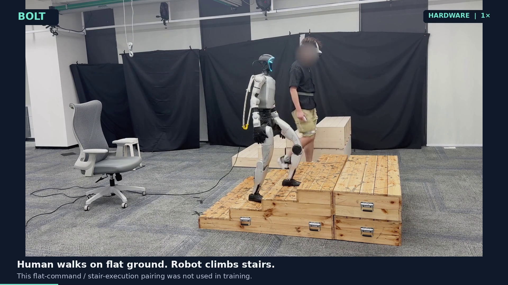
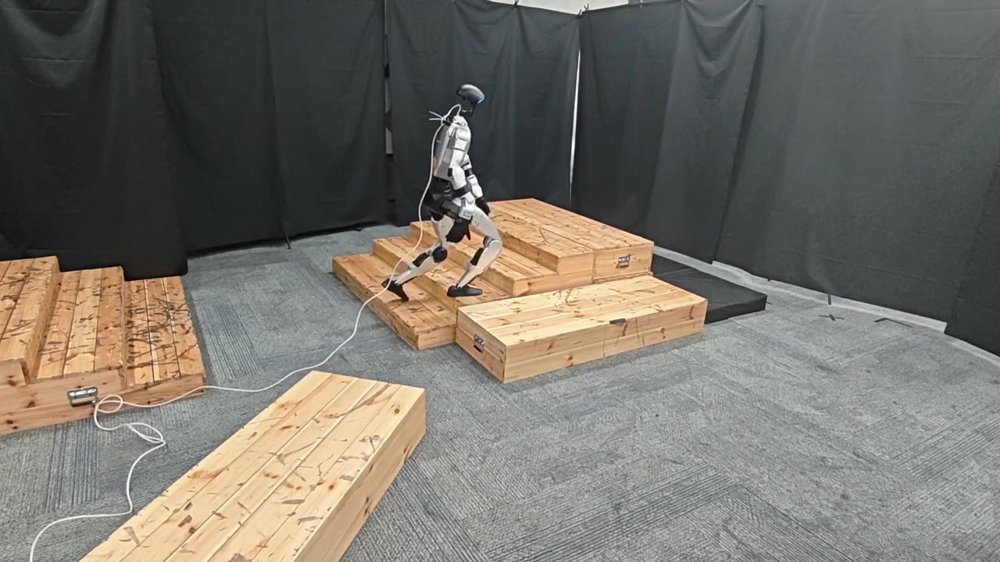
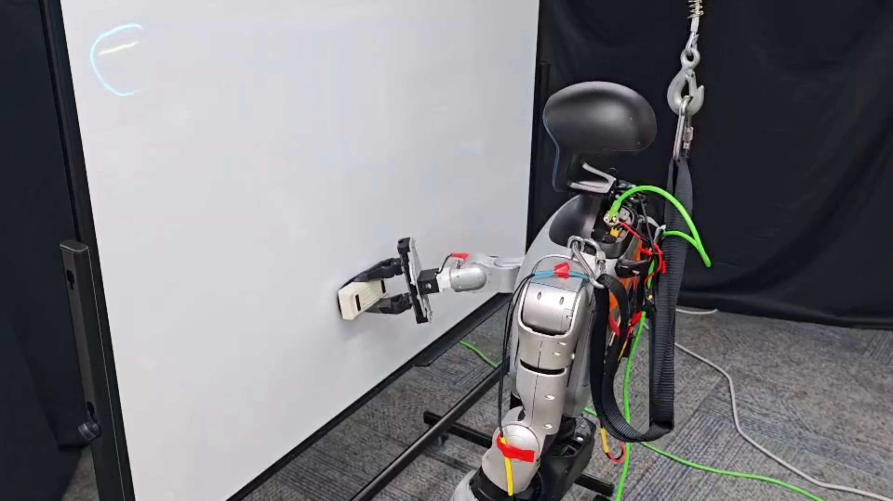
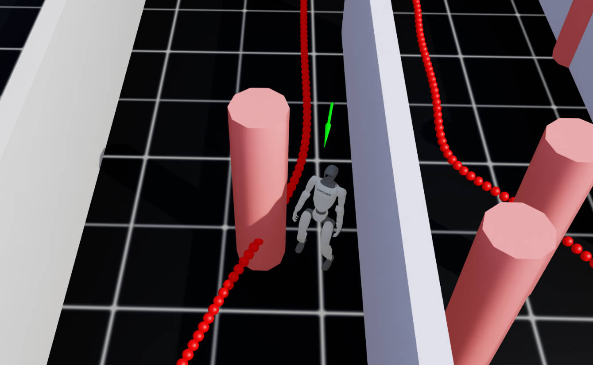
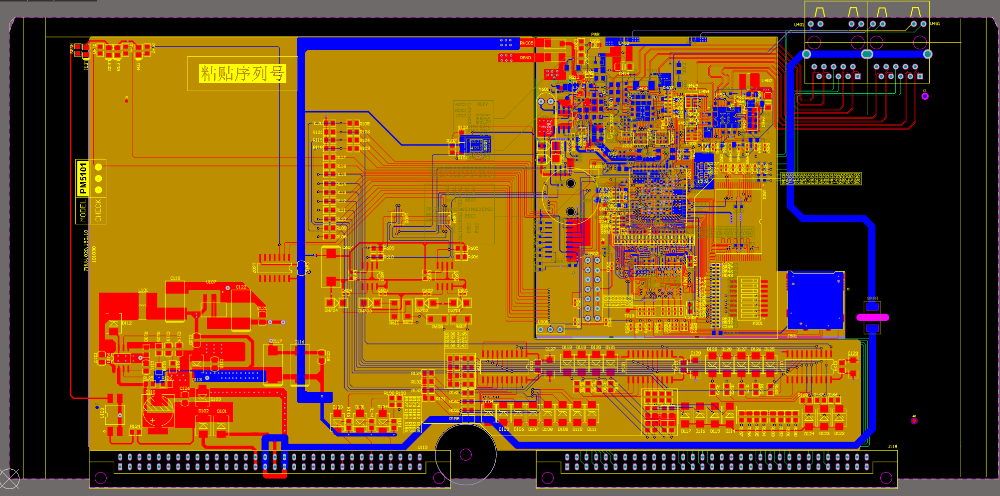
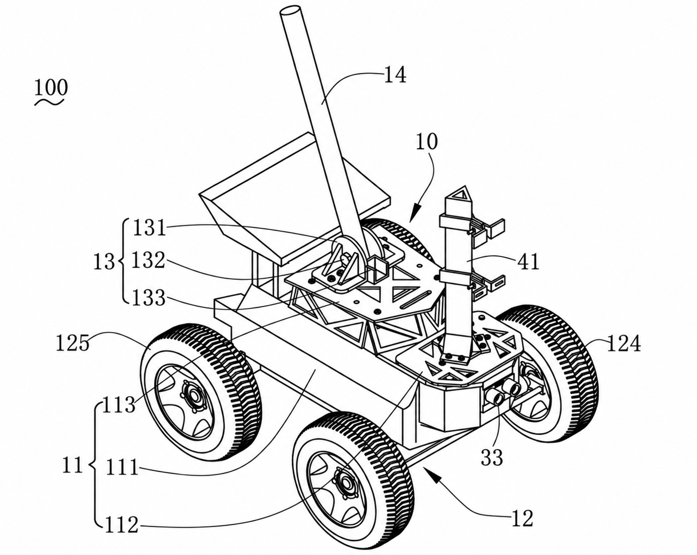

BOLT: From Motion Tracking to Blind Whole-Body Interaction
Submitted to ICRA 2027
Learning whole-body interaction from paired human–robot–support data, with motion commands and proprioception at deployment.
I received my M.Sc. in Computer Control & Automation from Nanyang Technological University in July 2026, and my B.Eng. from Central South University in 2023.
I am seeking Ph.D. opportunities for Fall 2027.
My background is in behavior foundation models, world models, robot dynamics, and reinforcement learning. My research interests are loco-manipulation and whole-body intelligence.
Contact: fanyudong2002@163.com.

Submitted to ICRA 2027
Learning whole-body interaction from paired human–robot–support data, with motion commands and proprioception at deployment.

CoRL 2026 · RSS 2026 WCBM Workshop
Terrain-aware humanoid motion tracking. I worked on ALIP stair-motion generation, assisted with MPPI trajectory optimization, and supported hardware deployment.

Submitted to ICRA 2027
Real-time humanoid loco-manipulation from a single egocentric camera. I built the teleoperation data-collection framework, deployed tasks on an RTX 4090, and contributed to architecture and inference discussions.
Under review
Integrating full-order dynamics into reinforcement learning for humanoid control, with centroidal feedforward-torque experiments and MuJoCo sim-to-sim validation.
Under review
Humanoid locomotion with centroidal dynamics and reinforcement learning. I worked on Fast-LIO2 point-cloud preprocessing, elevation mapping, and sim-to-real experiments with a LiDAR height-scanner policy.

I built a hierarchical navigation system for a simulated bipedal robot, combining A* planning, PPO-based obstacle avoidance, and a low-level locomotion controller. The robot adjusts its speed and path to navigate around obstacles.
Isaac Lab · PPO · A* planning · Hierarchical control

I designed and brought up a six-layer industrial controller PCB, covering component selection, schematics, high-speed layout, and power-on debugging. The board included DDR4 and Gigabit Ethernet interfaces, with post-layout signal-integrity analysis in ADS SI Pro.
Altium Designer · ADS SI Pro · DDR4 · Gigabit Ethernet

I built an assistive vehicle prototype combining STM32 chassis control, embedded vision, a custom PCB, and 3D-printed sensor mounts for tactile-paving recognition, traffic-light detection, and obstacle avoidance.
Patent application: 202321820262.3 (一种智能导盲车).
STM32 · Embedded vision · PCB design · SolidWorks